What Legacy of the Horadrim adds
New equipment throughout the campaign, Sanctuary Stones and the Descent after Baal.
The familiar campaign
New reasons to return.

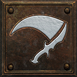
The balance pass
193 skills with LotH changesWeaker skills come up beside the strong ones, with every change explained.


New encounters
From the campaign into HellA fleeing gold Fallen, a hidden vault and the Gilded Wretch.

Try another build
Token of Absolution · Akara · 100,000 goldReset your skills and stats whenever you like, without starting over.
New equipment
New choices for your build.
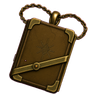
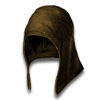
Uniques, sets, charms and jewels
New choices from Normal to the deepest endgame.


Crafting
11 reagents · 6 oilsReagents remake your equipment in the Cube; oils add a chosen stat.


Awakened uniques
Feed them the power of runesRune combinations awaken the next stage of a unique.

Leaves and Remnants
11 Leaves · five RemnantsCube Leaves into Journals; Descent Echoes drop Remnants.
Runebands
16 bands to chase in the endgame.Runebands are endgame chase items: rings that already hold part of a runeword. Insert the last rune to complete the runeword in a ring slot.


Endgame chase
Enigma, worn as a ring
The Runeband of Enigma already holds Jah and Ith. Socket a Ber Rune and it becomes Enigma in a ring slot, leaving your body armour free for another runeword.
Drops Bremm Sparkfist and others · Hell · 1 in 981,354
2-rune runewords →
10 bands · Required level 13–65
Already holds 1 rune. Insert the last rune to finish a 2-rune runeword in a ring.


3-rune runewords →
6 bands · Required level 43–65
Already holds 2 runes. Insert the last rune to finish a 3-rune runeword in a ring.


Stats that reshape skills
Ten item modifiers, each read by its own skills.
Companion Vitality →
Supported companions gain more life, up to +100% from items. Shadow Warrior, Shadow Master, Ravens, bound demons, traps, Hydra, barriers and hirelings do not gain life from it. It adds no bodies.
21 skills · sources
- Amazon
- Decoy, Valkyrie
- Necromancer
- Raise Skeleton, Clay Golem, Raise Skeletal Mage, Blood Golem, Iron Golem, Fire Golem, Revive
- Druid
- Poison Creeper, Oak Sage, Summon Spirit Wolf, Carrion Vine, Heart of Wolverine, Summon Dire Wolf, Solar Creeper, Spirit of Barbs, Summon Grizzly
- Warlock
- Summon Goatman, Summon Tainted, Summon Defiler
- Cortege of Briars · Eld Io in Boots: +15-25% to Summoned Companion Life
- Cortege of Clay · Tir Io in Boots: +15-25% to Summoned Companion Life
- Cortege of Bones · El Io in Boots: +15-25% to Summoned Companion Life
- Cortege of Horns · Ith Io in Boots: +15-25% to Summoned Companion Life
- Bone Throne · Myr Ber Cham in Voodoo Heads: +50% to Summoned Companion Life
- Mandate · Shael Dol in Helm: +15-25% to Summoned Companion Life
- Muster · El Ort in Helm: +10-20% to Summoned Companion Life
- Gravewarden · Dol Lum Pul in Voodoo Heads / Shield: +30-40% to Summoned Companion Life
- Wildbond · Tir Lum Pul in Pelt: +30-50% to Summoned Companion Life
- Shieldmaiden · Dol Io Lem in Armor: +40-60% to Summoned Companion Life
- Host of Hell · Tal Pul Gul in Grimoire: +40% to Summoned Companion Life
- Marrowcall: +30-40% to Summoned Companion Life
- The Engorged Codex: +80% to Summoned Companion Life
- Pack-Mother's Hide: +60% to Summoned Companion Life
- Sheltering, Preserving or Undying · magic or rare prefix on Weapon / Helm / Amulet / Voodoo Heads / Grimoire: +10-20, +21-35 or +36-50% to Summoned Companion Life
- Azure Oil + Perfect Skull on Bow / Crossbow / Knife / Scepter / Staff / Wand / Axe / Mace / Club / Hammer / Sword / Spear / Polearm: +36-50% to Summoned Companion Life


Faster Pulse Rate →
Faster pulses and storm spawning, up to +50% from items. Whole-frame breakpoints apply: Fissure first improves at +20%. Blizzard does not read this stat. Sanctuary also knocks back more often. Casting speed and duration stay the same.
9 skills · sources
- Sorceress
- Thunder Storm
- Necromancer
- Fire Golem
- Paladin
- Holy Fire, Holy Freeze, Holy Shock, Sanctuary
- Druid
- Fissure
- Assassin
- Blade Shield
- Warlock
- Eldritch Blast
- Thunderhead · Xeth Ort Lum in Orb / Staff: +20% Faster Pulse Rate
- Tolling · Ith Ort Ral in Shield: +15% Faster Pulse Rate
- Anthem · Shael Ko Lem in Sword / Scepter: +20% Faster Pulse Rate
- Thousand Edges · Shael Lum Um in Hand to Hand: +25% Faster Pulse Rate
- Thunder-Seer's Band: +20% Faster Pulse Rate
- Crown of the Vigil: +10% Faster Pulse Rate
- Bulwark of Devotion: +10% Faster Pulse Rate
- Gauntlets of Penance: +10% Faster Pulse Rate
- Pilgrim's Last Road: +10% Faster Pulse Rate
- Quickening, Unrelenting or Ceaseless · magic or rare prefix on Orb / Staff / Grimoire / Hand to Hand / Helm / Gloves / Boots: +10-15, +16-20 or +21-25% Faster Pulse Rate
- Crimson Oil + Perfect Skull on Boots / Gloves / Pelt / Primal Helm / Helm / Grimoire: +21-25% Faster Pulse Rate


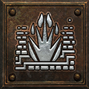
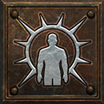
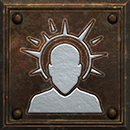

Repeated Attacks →
Each point adds one attack to a supported sequence or one shot to each sentry, up to +2 from items. Fend gains targets per sweep.
10 skills · sources
- Amazon
- Fend
- Paladin
- Zeal
- Druid
- Fury
- Assassin
- Dragon Talon, Charged Bolt Sentry, Wake of Fire, Lightning Sentry, Wake of Inferno, Death Sentry
- Warlock
- Mirrored Blades
- Tripwire · Xeth Io Ort in Hand to Hand: +1 Attacks per Sequence and Shots per Sentry
- Snare · Tal Ort in Hand to Hand: +1 Attacks per Sequence and Shots per Sentry
- Cadence · Ral Thul Tal in Any melee weapon: +1 Attacks per Sequence and Shots per Sentry
- Anthem · Shael Ko Lem in Sword / Scepter: +1 Attacks per Sequence and Shots per Sentry
- Litany · Myr Ohm Ber in Sword / Scepter / Spear: +2 Attacks per Sequence and Shots per Sentry
- Trapwright's Grips: +1 Attacks per Sequence and Shots per Sentry
- Ardent Gauntlets: +1 Attacks per Sequence and Shots per Sentry
- Ninefold Fang: +2 Attacks per Sequence and Shots per Sentry
- Hratli's Steady Hands: +1 Attacks per Sequence and Shots per Sentry
- of Onslaught · magic or rare suffix on Weapon / Gloves: +1 Attacks per Sequence and Shots per Sentry
- Black Oil + Perfect Sapphire on Gloves / Bow / Crossbow / Hand to Hand / Knife / Axe / Mace / Club / Hammer / Sword / Spear / Polearm: +1 Attacks per Sequence and Shots per Sentry


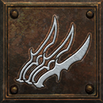

Projectiles →
Each point fires one more projectile. With none, every skill fires as it always has.
35 skills · sources
- Amazon
- Magic Arrow, Fire Arrow, Cold Arrow, Multiple Shot, Poison Javelin, Exploding Arrow, Lightning Bolt, Ice Arrow, Charged Strike, Plague Javelin, Strafe, Immolation Arrow, Freezing Arrow, Lightning Fury
- Sorceress
- Fire Bolt, Charged Bolt, Ice Bolt, Ice Blast, Fire Ball, Lightning, Glacial Spike, Frozen Orb
- Necromancer
- Teeth, Bone Spear
- Paladin
- Fist of the Heavens
- Druid
- Firestorm, Molten Boulder, Twister, Shock Wave, Tornado
- Assassin
- Fire Blast
- Warlock
- Echoing Strike, Blade Warp, Miasma Bolt, Miasma Chain
- Kindle · Xeth Ral Um in Orb / Staff: +1 to Projectiles
- Frostbite · Xeth Io Um in Orb / Staff: +1 to Projectiles
- Heaven's Wrath · Xeth Ist Lem in Scepter: +1 to Projectiles
- Arrowstorm · Vot Ort Mal in Any missile weapon: +1-2 to Projectiles
- Hail · Tal Ort Fal in Helm / Gloves: +2-3 to Projectiles
- Deluge · Lem Ist Gul in Helm / Gloves: +3-5 to Projectiles
- Torrent · Eld Ral Ort in Sword / Staff / Scepter / Knife: +1 to Projectiles
- Squall · Eth Tal Ral in Bow / Crossbow: +1 to Projectiles
- Flurry · Tal Nef in Helm / Gloves / Belt: +1 to Projectiles
- Cloudburst · Ort Shael Um in Bow / Crossbow / Sword / Staff / Scepter / Knife: +1 to Projectiles
- Salvo · Ort Ral in Graven Arrows / Graven Bolts: +1 to Projectiles
- Trueflight · Ko Fal in Graven Arrows / Graven Bolts: +1 to Projectiles
- Arrowfall · Ko Um Ist in Graven Arrows / Graven Bolts: +1 to Projectiles
- Windborne · Xeth Um Lo in Graven Arrows / Graven Bolts: +1 to Projectiles
- Firmament · Vot Ber Jah in Graven Arrows / Graven Bolts: +2 to Projectiles
- Forked Path · Ort Ko Mal in Staff / Orb: +1 to Projectiles
- Pyre · Ral Lum Ist in Staff / Orb: +1 to Projectiles
- Marrow · Lum Ist in Wand: +1 to Projectiles
- Gale · Ral Ko Um in Pelt / Staff: +1 to Projectiles
- Fetor · Io Lum Ist in Grimoire: +1 to Projectiles
- Starbreak · Xeth Ohm Vex in Orb: +2 to Projectiles
- Galeheart · Xeth Vex Ber in Pelt / Staff: +2 to Projectiles
- Hundred Shafts · Vot Ohm Ber in Bow: +3 to Projectiles
- Undertow · Tal Ort Fal in Graven Arrows / Graven Bolts: +1 to Projectiles
- The Unerring Flight: +3-5 to Projectiles
- The Unerring Flight: +3-5 to Projectiles
- Askari Rimebow: +1 to Projectiles
- Skovos Emberbow: +1 to Projectiles
- Rogue's Keepsake: +1 to Projectiles
- Vizjerei Lens: +1 to Projectiles
- Viz-Jun's Last Spark: +2 to Projectiles
- Censer of Zakarum: +2 to Projectiles
- Storm Brood: +6-8 to Projectiles
- The Unwritten Storm: +1 to Projectiles
- The Bell of Bone: +1-2 to Projectiles
- 40 Binding Blades: +1, +1-2 or +2 to Projectiles
- of Multitudes · magic or rare suffix on Missile Weapon / Javelin / Orb / Staff / Wand / Hand to Hand / Grimoire: +1 to Projectiles
- Black Oil + Perfect Diamond on Grimoire / Bow / Crossbow / Hand to Hand / Orb / Staff / Wand: +1 to Projectiles


Volley weight →
Each extra projectile adds 35% to the volley's damage; each point adds 1% more, up to +10% from items. It needs +# to Projectiles.
22 skills · sources
- Amazon
- Magic Arrow, Fire Arrow, Cold Arrow, Poison Javelin, Exploding Arrow, Lightning Bolt, Ice Arrow, Plague Javelin, Immolation Arrow, Freezing Arrow
- Sorceress
- Fire Bolt, Ice Bolt, Ice Blast, Fire Ball, Lightning, Glacial Spike, Frozen Orb
- Necromancer
- Bone Spear
- Druid
- Molten Boulder, Tornado
- Assassin
- Fire Blast
- Warlock
- Miasma Bolt
- Naphtha · Ral Fal Mal in Any missile weapon: +13-15% Damage per Extra Projectile
- Flurry · Tal Nef in Helm / Gloves / Belt: +5% Damage per Extra Projectile
- Cloudburst · Ort Shael Um in Bow / Crossbow / Sword / Staff / Scepter / Knife: +10% Damage per Extra Projectile
- Trueflight · Ko Fal in Graven Arrows / Graven Bolts: +5% Damage per Extra Projectile
- Arrowfall · Ko Um Ist in Graven Arrows / Graven Bolts: +10% Damage per Extra Projectile
- Firmament · Vot Ber Jah in Graven Arrows / Graven Bolts: +10% Damage per Extra Projectile
- Pyre · Ral Lum Ist in Staff / Orb: +8% Damage per Extra Projectile
- Marrow · Lum Ist in Wand: +8% Damage per Extra Projectile
- Starbreak · Xeth Ohm Vex in Orb: +10% Damage per Extra Projectile
- Undertow · Tal Ort Fal in Graven Arrows / Graven Bolts: +10-15% Damage per Extra Projectile
- Crosswind · Shael Um Fal in Boots: +15-20% Damage per Extra Projectile
- Rogue's Keepsake: +5% Damage per Extra Projectile
- Vizjerei Lens: +8% Damage per Extra Projectile
- Viz-Jun's Last Spark: +10% Damage per Extra Projectile
- Gale Binder: +10% Damage per Extra Projectile
- The Unwritten Storm: +10% Damage per Extra Projectile
- The Bell of Bone: +10% Damage per Extra Projectile
- Weighted, Leaden or Hailing · magic or rare prefix on Missile Weapon / Javelin / Orb / Staff / Wand / Hand to Hand / Amulet: +5-8, +9-12 or +13-15% Damage per Extra Projectile
- Azure Oil + Perfect Amethyst on Amulet / Bow / Crossbow / Hand to Hand / Orb / Staff / Wand: +13-15% Damage per Extra Projectile

Area of effect →
Each point widens the skill's area by one yard.
50 skills · sources
- Amazon
- Strafe, Lightning Strike, Lightning Fury
- Sorceress
- Inferno, Static Field, Frost Nova, Nova, Chain Lightning, Glacial Spike, Meteor, Blizzard
- Necromancer
- Corpse Explosion, Poison Explosion, Poison Nova
- Paladin
- Fist of the Heavens
- Barbarian
- Leap, Leap Attack, Grim Ward, War Cry
- Druid
- Molten Boulder, Arctic Blast, Fissure, Volcano, Tornado, Armageddon, Hurricane
- Assassin
- Fire Blast, Shock Web, Fists of Fire, Claws of Thunder, Dragon Tail, Mind Blast, Blades of Ice, Dragon Flight, Death Sentry, Blade Shield, Phoenix Strike
- Warlock
- Blood Boil, Eldritch Blast, Hex: Purge, Cleave, Sigil: Lethargy, Ring of Fire, Miasma Bolt, Sigil: Rancor, Flame Wave, Miasma Chain, Sigil: Death, Apocalypse, Abyss
- Heaven's Wrath · Xeth Ist Lem in Scepter: +2 Yards to Area Radius
- Black Death · Xeth Tal Um in Voodoo Heads: +2 Yards to Area Radius
- Wildfire · Xeth Ort Um in Pelt / Staff: +2 Yards to Area Radius
- Expanse · Ort Lum in Staff / Orb / Hand to Hand: +2 Yards to Area Radius
- Windborne · Xeth Um Lo in Graven Arrows / Graven Bolts: +3 Yards to Area Radius
- Stormlash · Ort Mal Ist in Spear: +2 Yards to Area Radius
- Whiteout · Io Um Gul in Staff / Orb: +2 Yards to Area Radius
- Gale · Ral Ko Um in Pelt / Staff: +2 Yards to Area Radius
- Thousand Edges · Shael Lum Um in Hand to Hand: +2 Yards to Area Radius
- Fetor · Io Lum Ist in Grimoire: +2 Yards to Area Radius
- Galeheart · Xeth Vex Ber in Pelt / Staff: +3 Yards to Area Radius
- Hallow · Tir Thul in Orb / Wand: +2 Yards to Area Radius
- Cinderwake: +1-2 Yards to Area Radius
- Thunder-Seer's Band: +2 Yards to Area Radius
- Voice of the Ancients: +2 Yards to Area Radius
- Censer of Zakarum: +3 Yards to Area Radius
- Ashwalker's Due: +3-5 Yards to Area Radius
- Sprawling · magic or rare prefix on Orb / Staff / Wand / Pelt / Hand to Hand / Voodoo Heads / Grimoire / Primal Helm: +2 Yards to Area Radius
- Crimson Oil + Perfect Amethyst on Pelt / Orb / Staff / Wand: +2 Yards to Area Radius


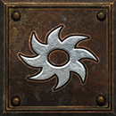

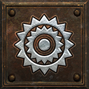
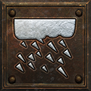
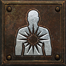
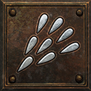


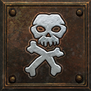
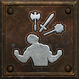
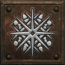
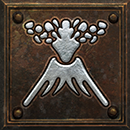
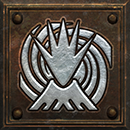
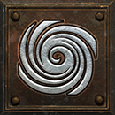
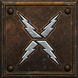
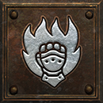
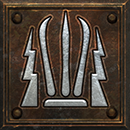
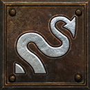
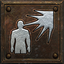
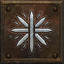
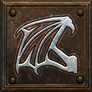
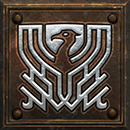
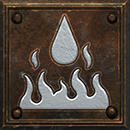
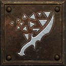
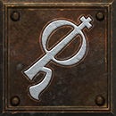
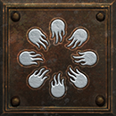
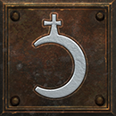
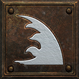
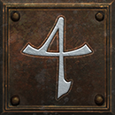
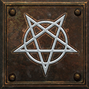
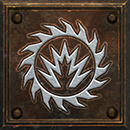

Aura and curse radius →
Each point widens the aura or curse by one yard, up to +4 yards from items.
42 skills · sources
- Amazon
- Inner Sight, Slow Missiles
- Necromancer
- Amplify Damage, Dim Vision, Weaken, Iron Maiden, Terror, Confuse, Life Tap, Attract, Decrepify, Lower Resist, Fire Golem
- Paladin
- Might, Prayer, Resist Fire, Holy Fire, Thorns, Defiance, Resist Cold, Blessed Aim, Cleansing, Resist Lightning, Concentration, Holy Freeze, Vigor, Holy Shock, Sanctuary, Meditation, Fanaticism, Conviction, Redemption, Salvation
- Barbarian
- Howl, Shout, Battle Cry, Battle Orders, Battle Command
- Druid
- Oak Sage, Heart of Wolverine, Spirit of Barbs
- Assassin
- Cloak of Shadows
- Solace · Eth Ith Dol in Any shield: +2 Yards to Aura and Curse Radius
- Mandate · Shael Dol in Helm: +2 Yards to Aura and Curse Radius
- Murmur · Eth Thul in Wand / Voodoo Heads: +2 Yards to Aura and Curse Radius
- Herald · Ort Dol Lem in Primal Helm: +3 Yards to Aura and Curse Radius
- Standard · Ko Pul Mal in Auric Shields: +4 Yards to Aura and Curse Radius
- Warlord's Call · Myr Vex Lo in Primal Helm: +4 Yards to Aura and Curse Radius
- Far Cry · Dol Eth in Wand: +2 Yards to Aura and Curse Radius
- The Witch's Fletching: +4 Yards to Aura and Curse Radius
- The Witch's Fletching: +4 Yards to Aura and Curse Radius
- The Consecrated Shaft: +6-8 Yards to Aura and Curse Radius
- The Consecrated Shaft: +6-8 Yards to Aura and Curse Radius
- Voice of the Ancients: +3 Yards to Aura and Curse Radius
- Hand of Dominion: +4 Yards to Aura and Curse Radius
- The Far Requiem: +6-8 Yards to Aura and Curse Radius
- of Reach or of Far Reach · magic or rare suffix on Voodoo Heads / Auric Shields / Scepter / Wand / Amulet / Circlet / Amazon Item / Primal Helm: +2 or +4 Yards to Aura and Curse Radius
- Crimson Oil + Perfect Skull on Amulet / Voodoo Heads / Auric Shields: +4 Yards to Aura and Curse Radius


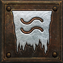
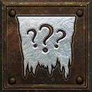
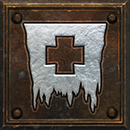
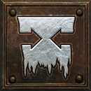
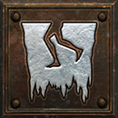
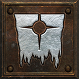
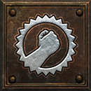
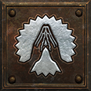
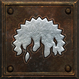
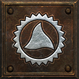
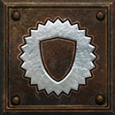
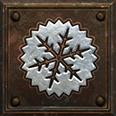
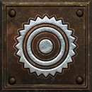
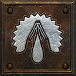
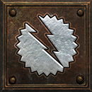

Chain hits →
Each point adds one more hit to the chain.
2 skills · sources
- Amazon
- Lightning Strike
- Sorceress
- Chain Lightning
- Thunderhead · Xeth Ort Lum in Orb / Staff: +2 Hits to Chain Lightning and Lightning Strike
- Expanse · Ort Lum in Staff / Orb / Hand to Hand: +2 Hits to Chain Lightning and Lightning Strike
- Stormlash · Ort Mal Ist in Spear: +2 Hits to Chain Lightning and Lightning Strike
- Forked Path · Ort Ko Mal in Staff / Orb: +2 Hits to Chain Lightning and Lightning Strike
- Aftershock · Thul Dol Io in Spear: +2 Hits to Chain Lightning and Lightning Strike
- Skovos Stormtine: +1-2 Hits to Chain Lightning and Lightning Strike
- Thunder-Seer's Band: +2 Hits to Chain Lightning and Lightning Strike
- Fork of the Storm: +6-8 Hits to Chain Lightning and Lightning Strike
- of Branching · magic or rare suffix on Orb / Staff / Javelin / Spear: +1 Hits to Chain Lightning and Lightning Strike
- Black Oil + Perfect Topaz on Orb / Staff / Spear: +1 Hits to Chain Lightning and Lightning Strike

Summon limit →
Each point lets you keep one more of that summon.
28 skills · sources
- Amazon
- Decoy, Valkyrie
- Sorceress
- Hydra
- Necromancer
- Raise Skeleton, Clay Golem, Raise Skeletal Mage, Blood Golem, Iron Golem, Fire Golem, Revive
- Druid
- Raven, Poison Creeper, Summon Spirit Wolf, Carrion Vine, Summon Dire Wolf, Solar Creeper, Summon Grizzly
- Assassin
- Blade Sentinel, Charged Bolt Sentry, Wake of Fire, Shadow Warrior, Lightning Sentry, Wake of Inferno, Death Sentry, Shadow Master
- Warlock
- Summon Goatman, Summon Tainted, Summon Defiler
- Tripwire · Xeth Io Ort in Hand to Hand: +1 to Maximum Summons
- Dead March · Myr Dol Lum in Voodoo Heads: +1 to Maximum Summons
- Bone Throne · Myr Ber Cham in Voodoo Heads: +1 to Maximum Summons
- Mandate · Shael Dol in Helm: +1 to Maximum Summons
- Muster · El Ort in Helm: +1 to Maximum Summons
- Gravewarden · Dol Lum Pul in Voodoo Heads / Shield: +1 to Maximum Summons
- Wildbond · Tir Lum Pul in Pelt: +1 to Maximum Summons
- Shieldmaiden · Dol Io Lem in Armor: +1 to Maximum Summons
- Host of Hell · Tal Pul Gul in Grimoire: +1 to Maximum Summons
- Kindred · Io Eth in Wand: +2 to Maximum Summons
- Snarekeeper's Tread: +1 to Maximum Summons
- The Unforgotten Sister: +1 to Maximum Summons
- Marrowcall: +1 to Maximum Summons
- The Engorged Codex: +2 to Maximum Summons
- Pack-Mother's Hide: +2 to Maximum Summons
- The Unbound Page: +1-2 to Maximum Summons
- Brood of Embers: +2-3 to Maximum Summons
- of the Host · magic or rare suffix on Voodoo Heads / Wand / Pelt / Grimoire / Orb / Hand to Hand / Amazon Item: +1 to Maximum Summons
- Black Oil + Perfect Skull on Pelt / Grimoire / Voodoo Heads / Hand to Hand / Orb / Wand: +1 to Maximum Summons


Buff and curse duration →
Each point makes the buff or curse last 1% longer.
69 skills · sources
- Amazon
- Inner Sight, Poison Javelin, Slow Missiles, Impale, Plague Javelin, Immolation Arrow, Decoy
- Sorceress
- Frozen Armor, Blaze, Shiver Armor, Fire Wall, Enchant, Thunder Storm, Energy Shield, Blizzard, Chilling Armor, Hydra
- Necromancer
- Amplify Damage, Dim Vision, Weaken, Iron Maiden, Terror, Confuse, Life Tap, Attract, Decrepify, Lower Resist, Revive
- Paladin
- Conversion, Holy Shield
- Barbarian
- Howl, Shout, Battle Cry, Frenzy, Battle Orders, Grim Ward, Battle Command
- Druid
- Molten Boulder, Feral Rage, Maul, Fissure, Armageddon, Hurricane
- Assassin
- Tiger Strike, Shock Web, Blade Sentinel, Burst of Speed, Fists of Fire, Cloak of Shadows, Cobra Strike, Fade, Claws of Thunder, Blades of Ice, Blade Shield, Venom, Phoenix Strike
- Warlock
- Death Mark, Engorge, Consume, Eldritch Blast, Hex: Bane, Hex: Siphon, Hex: Purge, Sigil: Lethargy, Miasma Bolt, Sigil: Rancor, Miasma Chain, Sigil: Death, Abyss
- Treachery · Shael Thul Lem in Armor: +10-15% Buff and Curse Duration
- Clamor · Tir Tal in Primal Helm: +10-15% Buff and Curse Duration
- Mandate · Shael Dol in Helm: +15-20% Buff and Curse Duration
- Murmur · Eth Thul in Wand / Voodoo Heads: +20% Buff and Curse Duration
- Herald · Ort Dol Lem in Primal Helm: +25% Buff and Curse Duration
- Whiteout · Io Um Gul in Staff / Orb: +20% Buff and Curse Duration
- Fetor · Io Lum Ist in Grimoire: +20% Buff and Curse Duration
- Warlord's Call · Myr Vex Lo in Primal Helm: +50% Buff and Curse Duration
- Long Vigil · Shael Fal Thul in Gloves: +25-35% Buff and Curse Duration
- Far Cry · Dol Eth in Wand: +15-20% Buff and Curse Duration
- The Witch's Fletching: +20-40% Buff and Curse Duration
- The Witch's Fletching: +20-40% Buff and Curse Duration
- Voice of the Ancients: +30% Buff and Curse Duration
- Hand of Dominion: +40% Buff and Curse Duration
- The Unspent Oath: +60-100% Buff and Curse Duration
- The Widow's Reproach: +20% Buff and Curse Duration
- Lingering or Abiding · magic or rare prefix on Pelt / Primal Helm / Helm / Gloves / Boots / Circlet / Hand to Hand: +10-15 or +16-20% Buff and Curse Duration
- Azure Oil + Perfect Skull on Boots / Gloves / Pelt / Primal Helm / Helm / Hand to Hand: +16-20% Buff and Curse Duration


Roads beyond Baal
Three roads to explore.


The Descent
50 floors · five bandsA road down after Baal, with an echo at the foot of each band.


Sanctuary Stones
45 places · fifteen tiersChoose a sealed place, face its bosses, then climb a tier.


The Sentinel Vigil
Defiled Shrines · seal quartersHunt the Sentinels, gather their seal quarters and open the road to the Last Vigil.
Pinnacle encounters
Five pinnacles and the Echoes: many roads to test a build.The Convergence
All five Unborn at once; Hell's summit · The Black AbyssFive Echo trophies, cubed in Harrogath

Heaven
Echo of the Veiled Prophet · The Silver CityFive Seal trophies, cubed in Harrogath
Stone ubers I–V
Azmodan, Belial, the Bonebound Twins, Bartuc and KulleOne seal, cubed in Harrogath

The Shade of Diablo
A Pentagram of Chaos and three Stones of JordanOne Echo trophy + three rings, cubed in Harrogath

The Last Vigil
Four Sentinel shades, then the Last Vigil.Four seal quarters, cubed in Harrogath
Echo bosses
One at the foot of each Descent band.
Every boss
Map bosses, echoes and pinnacles: where to find them and what they drop.
Room for your gear
More space for the hunt.Inventory
Expanded to 12×7; new cells are lit.
Stash
Bigger, with Stones, Relics and Runecraft tabs where each item stacks in its own slot.
Mercenary gear
Equip a fuller kit and share powerful uniques such as the Canticle.
- Amulet
- Gloves
- Ring
- Belt
- Ring
- Boots
- Helm
- Body armor
- Weapon
- Shield
Sockets
Gloves, boots, belts and rings can roll sockets. A Horn of Delving adds a random number of sockets, up to the most the item can hold, to an unsocketed item.
| Item | D2 | 1–25 | 26–40 | 41+ |
|---|---|---|---|---|
| Boots | 0 | 2 | 2 | 3 |
| Gloves | 0 | 2 | 2 | 3 |
| Belt | 0 | 2 | 2 | 2 |
The smaller changes
| What | Change | Why |
|---|---|---|
| Act V waypoints | Arreat Plateau leaves the menu; Arreat Descent comes last, after the Worldstone Keep | The way down to the Descent sits at the end of the list. |
| Grimoires and Necromancer heads | Most sockets: 2 → 3 | Room for the three-rune grimoire runewords. |
| Tomes of Town Portal and Identify | Most scrolls in one tome: 20 → 50 | Fewer trips to town to refill them. |
| Keys | Most in one stack: 12 → 50 | Fewer trips to town, and more room in the inventory. |
| Abyss | Widest pull: 11 → 12 yards | The pull keeps widening with Enhanced Entropy to level 25. |
| Miasma clouds | Longest bonus duration: +4 → +5 seconds | The clouds keep lasting longer with Enhanced Entropy to level 25. |
| Bind Demon | A demon above 85% life: no chance → a quarter of the chance | You need not wound a demon before you try. |
| Bind Demon | Chance to bind per point in Death Mark: 1% → 1.5% | Death Mark helps Bind Demon more. |
| Echoes in Normal and Nightmare | Drop the loot of the Evil they echo, and one rune | The echoes are fought on every difficulty. |
| Uber Tristram | Uber Mephisto, Diablo and Baal now drop loot, and each can drop his own amulet | The last fight drops loot worth the walk. |
| Bishibosh, Rakanishu and Bartuc the Bloody | In Nightmare and Hell, each can drop its own unique, 1 in 25 kills, as well as its usual drop | A reason to hunt them again. |
| Named monsters | 1 of them can each drop a unique jewel of their own in Nightmare and Hell ( in Hell only). Among them are Radament, the Summoner and the Council | A reason to hunt them again. |
| The Seal bosses, Heaven's host and the Echo of Inarius | Fight at their own levels, 108 to 110 | They are tuned for the deepest endgame. |
Next: The endgame →
Ready to play?
Install on Windows or Steam Deck, then explore at your own pace.